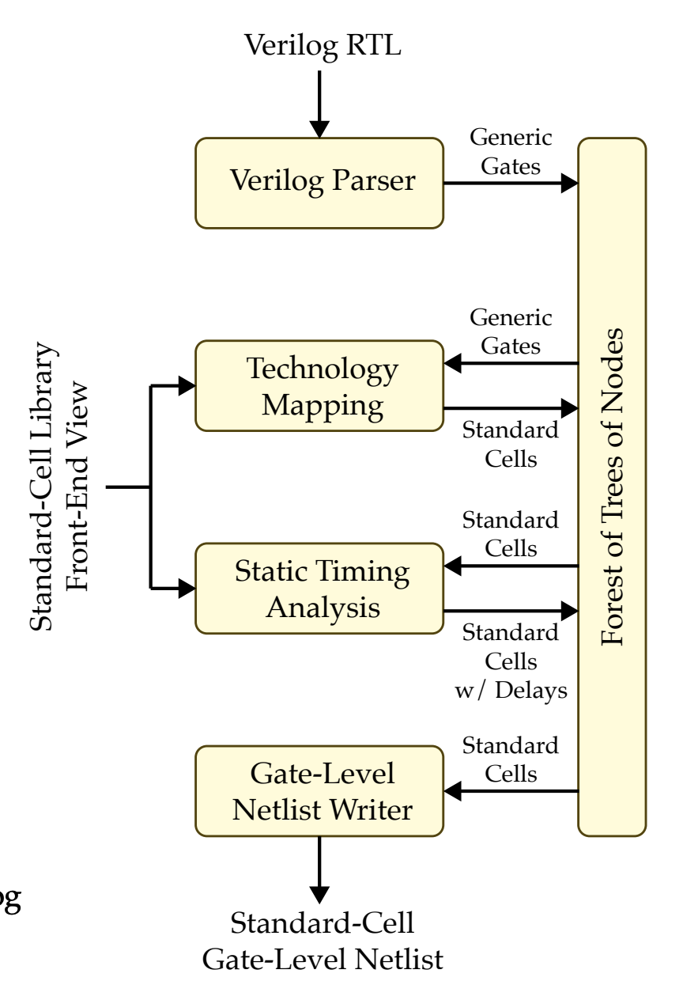
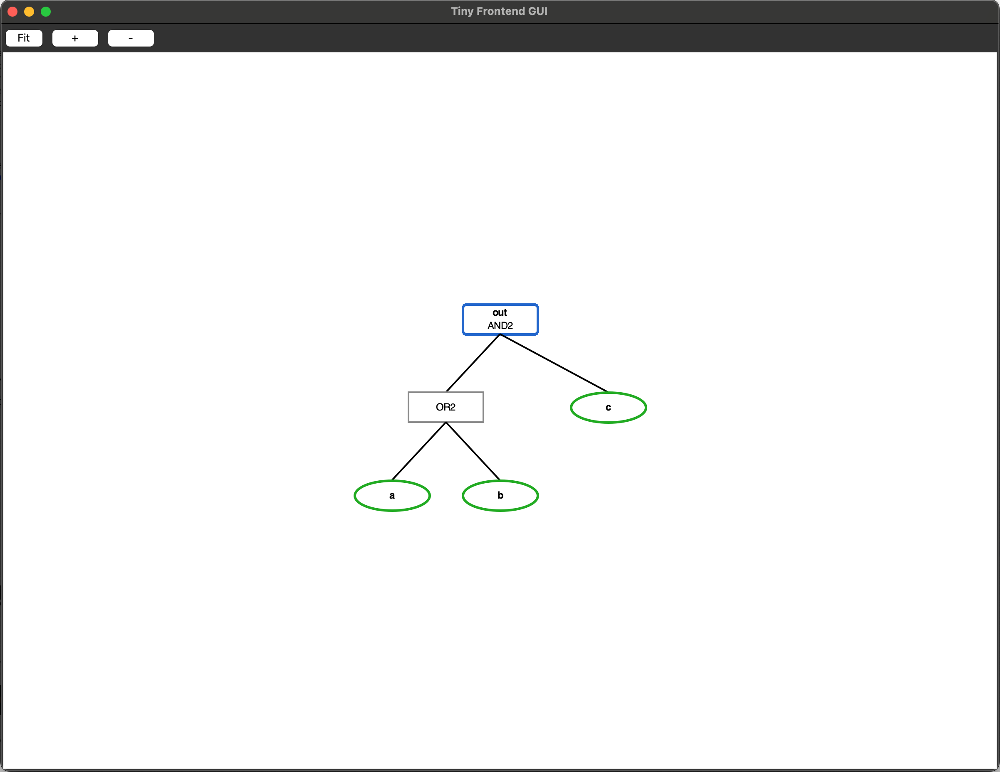
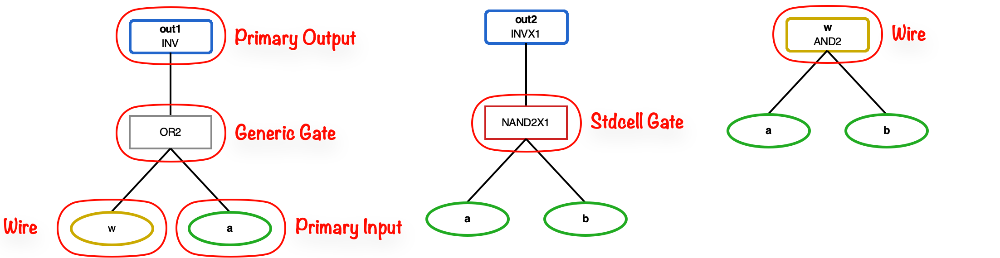

ECE 6745 Lab 3: TinyFlow Front End
In this lab, we will explore both the data structures and algorithms used in TinyFlow front end. We will implement a basic synthesis tool that transforms Verilog RTL into a gate-level netlist and then use this synthesis tool to create a very simple end-to-end front end flow which includes two-state RTL simulation, four-state RTL s walk through the complete frontend verification flow for an RTL design.
-
Verilog Parser: Reads Verilog RTL and converts it into an internal tree representation of generic gates
-
Substitution: Pattern matching and replacement operation that transforms trees by matching a find pattern and producing a new tree from a replace template
-
Naive Technology Mapping: Maps generic gates to standard cells from your library using simple pattern substitution
-
Gate-Level Netlist Writer: Outputs the mapped design as a Verilog gate-level netlist using your standard cells
We will be using the following TinyFlow frontend synthesis flow.

We will begin by exploring the TinyFlow data structures using the REPL and GUI. We will then implement a Verilog parser, tree printing, substitution, and naive technology mapping. Finally, we will walk through the four-step frontend flow (2-state simulation, 4-state simulation, synthesis, fast-functional gate-level simulation) to verify a Full Adder design.
1. Logging Into ecelinux
Follow the same process as previous labs. Find a free workstation and log into the workstation using your NetID and standard NetID password. Then complete the following steps. These are the same steps as in the first lab with one exception. We are now installing the VS Code Surfer extension to be able to view waveforms.
- Start VS Code
- Install the Remote-SSH extension and the Surfer extension
- Use View > Command Palette to execute Remote-SSH: Connect Current Window to Host...
- Enter netid@ecelinux-XX.ece.cornell.edu where XX is an ecelinux server number
- Use View > Explorer to open your home directory on ecelinux
- Use View > Terminal to open a terminal on ecelinux
- Start MS Remote Desktop


Now use the following commands to clone the repo we will be using for today's lab.
% source setup-ece6745.sh
% source setup-gui.sh
% mkdir -p ${HOME}/ece6745
% cd ${HOME}/ece6745
% git clone git@github.com:cornell-ece6745/ece6745-lab3 lab3
% cd lab3
% tree
Your repo contains the following directories:
.
├── README.md
├── asic
│ └── build-fa
│ ├── 01-verilator-rtlsim
│ ├── 02-iverilog-rtlsim
│ ├── 03-tinyflow-synth
│ │ └── run.py
│ └── 04-tinyflow-ffglsim
├── rtl
│ ├── FullAdder.v
│ └── test
│ └── FullAdder-test.v
├── stdcells
└── tinyflow
├── synth
│ ├── StdCellFrontEndView.py
│ ├── TinyFrontEndDB.py
│ ├── TinyFrontEndGUI.py
│ ├── print_tree.py
│ ├── substitute.py
│ ├── techmap_unopt.py
│ ├── tinyv.lark
│ └── verilog_parser.py
└── tinyflow-synth
To make it easier to cut-and-paste commands from this handout onto the
command line, you can tell Bash to ignore the % character using the
following command:
Now you can cut-and-paste a sequence of commands from this tutorial
document and Bash will not get confused by the % character which begins
each line.
Our frontend tools use the front-end view you developed in Project 1 Part A. Copy your front-end view file into the lab3 folder:
2. Data Structures
As discussed in lecture, TinyFlow represents logic designs as trees of
gates. Our synthesis tool will form these trees from Verilog and manipulate
them through various transformations. The trees are stored in a data
container called TinyFrontEndDB.
To get started, create a build directory and start the TinyFlow REPL:
% mkdir -p ${HOME}/ece6745/lab3/tinyflow/build
% cd ${HOME}/ece6745/lab3/tinyflow/build
% ../tinyflow-synth
TinyFlow Synth REPL v0.1
Type 'help()' for available commands.
Type 'clear()' to clear the screen.
Type 'exit()' or Ctrl-D to quit.
tinyflow-synth>
The tinyflow-synth tool is where we will implement our synthesis
algorithms. It provides a REPL for interactive exploration.
2.1. Nodes and Trees
The base class for all gates is Node. Generic gates (AND2, OR2, NAND2,
NOR2, XOR2, NOT, INV, BUF) are Nodes that represent logic operations.
Standard cell gates (INVX1, NAND2X1, NOR2X1, etc.) are Nodes read in from
your front-end view. Signal nodes represent inputs and wires. There are
also special Wildcard nodes that we will explain later. Let's create a
simple tree and explore it:
tinyflow-synth> a, b, c = Signal("a"), Signal("b"), Signal("c")
tinyflow-synth> tree = AND2(OR2(a, b), c)
tinyflow-synth> print(tree)
tinyflow-synth> print(tree.type)
tinyflow-synth> print(tree.generic)
tinyflow-synth> print(tree.children)
tinyflow-synth> print(tree.children[0].type)
tinyflow-synth> print(tree.children[1])
tinyflow-synth> print(tree.eval(a=1, b=0, c=1))
Each node has a type (the gate name), children (its inputs), and
generic (True for generic gates, False for standard cell gates). Signal
nodes are leaf nodes with no children. Nodes also provide helper methods:
is_signal() returns True for Signal nodes, is_wildcard() returns
True for Wildcard nodes, and ==/!= compare nodes by type.
tinyflow-synth> a.is_signal()
True
tinyflow-synth> tree.is_signal()
False
tinyflow-synth> _a.is_wildcard()
True
tinyflow-synth> a == Signal("a")
True
tinyflow-synth> a == AND2(a, b)
False
tinyflow-synth> AND2(a, b) == AND2(c, c)
True
tinyflow-synth> AND2(a, b) == OR2(a, b)
False
Go ahead and evaluate all input combinations using tree.eval() and
derive the truth table for AND2(OR2(a, b), c).
2.3. Frontend Database and GUI
Now let's use the frontend database to manage a design. To create a
database using TinyFrontEndDB, we first need to have our frontend view
ready. StdCellFrontEndView loads the front-end view YAML file you
created in Project 1 Part A. It provides access to cell information
(area, timing parameters), patterns for technology mapping, and standard
cell gate classes (INVX1, NAND2X1, etc.).
Let's create the view and database:
tinyflow-synth> view = StdCellFrontEndView.parse_lib("../../stdcells/stdcells-fe.yml")
tinyflow-synth> db = TinyFrontEndDB(view)
The database supports visualizing its contents through a GUI. Enable the GUI with:
The GUI window will open.
Now add inputs, outputs, and set a tree:
tinyflow-synth> a, b, c = Signal("a"), Signal("b"), Signal("c")
tinyflow-synth> db.add_inports(["a", "b", "c"])
tinyflow-synth> db.add_outports(["out"])
tinyflow-synth> db.set_tree("out", AND2(OR2(a, b), c))
Watch the GUI update to show your tree when you call db.set_tree(...).

In the visualization above, you will only see primary inputs, primary outputs, and generic gates. The GUI uses the following visual conventions:
- Green ovals: Primary inputs
- Orange ovals: Wire signals
- Blue ovals: Primary outputs
- Grey rectangles: Generic gates
- Red rectangles: Standard cell gates

Once you are done with the GUI, you can exit the REPL by calling exit() or pressing Ctrl-D.
3. Synthesis Algorithms
In this section we will implement a couple of algorithms that will warm you up for writing recursive functions and will be useful for Project 1 Part B. By the end of this lab, you will have a working naive technology mapping implementation that does the job but may not guarantee minimal area cost.
3.1. Verilog Parser
The first step of our synthesis flow is parsing. The parser lexes the simple Verilog syntax, forms an Abstract Syntax Tree (AST), and performs "forresting" to translate the AST into the forests of logic trees used in TinyFlow.
In this part, we will be discussing the limitations of verilog we can write for the TinyFlow. This limitation is mainly pedagogical to simplify the flow as well as limitations due to our parser (this does not mean our parser is not good).
Rules:
- Only Combinational Verilog
- Only Use
wirekeyword instead oflogic - Only Gate level modeling. However NOT using the gate primitives like
and(), or(), not()instead we will be usingassignstatements with operators:&, |, ~, ^. - No hierarchy, every module is flat.
- No multibit wires. So you cannot declare something like
wire[7:0] fooyou need something like - Limitations on ports. Note this is a limitation for the physical tapeout and we will communicate with you the number of input and output pins your module will get.
If you are ever confused take a look at the Lark grammar that we use to see what our parser should parse.
The database includes a method to read in Verilog by passing the path to the Verilog file:
tinyflow-synth> view = StdCellFrontEndView.parse_lib("../../stdcells/stdcells-fe.yml")
tinyflow-synth> db = TinyFrontEndDB(view)
tinyflow-synth> db.enable_gui()
tinyflow-synth> db.read_verilog("../../rtl/FullAdder.v")
Watch the GUI update to show the parsed trees.
3.2. Printing Trees
Before we implement more complex algorithms, let's warm up with a simple
recursive function. Implement print_tree(node, indent=0) in
synth/print_tree.py that prints a tree structure to the terminal. The
function should recursively visit a node and its children, passing along
the indentation level. At each node, print the indent amount of spaces
first, then the node type (accessible via node.type). Signal nodes are
leaf nodes and should print their name. For example, given
AND2(OR2(Signal("a"), Signal("b")), Signal("c")), it should print:
Open the synth/print_tree.py file:
Here are some hints: The function takes a node and an indent level. First, print the
indentation (one space per indent level). Then check if the node is a
Signal (with .is_signal()): if so, print its name; otherwise, print the node's type and
recursively call print_tree on each child with indent + 1.
Once you are done with your implementation, test your function in the REPL:
tinyflow-synth> a, b, c, d = Signal("a"), Signal("b"), Signal("c"), Signal("d")
tinyflow-synth> tree = AND2(OR2(a, b), c)
tinyflow-synth> print_tree(tree)
tinyflow-synth> tree = XOR2(AND2(a, b), OR2(c, d))
tinyflow-synth> print_tree(tree)
3.3. Matching Trees
Building on the spirt of recursively travering trees, we now implement match(n_node, p_node) which compares two trees and returns True if they match, False otherwise.
This function takes a node tree n_node and a pattern tree p_node.
Here we introduce a new type of node called Wildcard. A wildcard matches
any subtree. For example, the pattern AND2(_a, _b) matches AND2(x, y),
AND2(OR2(a, b), c), or any other AND2 tree regardless of its children.
The REPL provides predefined wildcards _a, _b, _c, _d for
convenience. In this match function, you can assume only the pattern tree
p_node can contain wildcards.
Open synth/substitute.py:
Here are some hints: The function traverses both trees together. First,
check if p_node is a wildcard (using .is_wildcard()): if so, return
True because wildcards match anything. Then compare p_node and n_node:
if they are different (using !=), return False. These are the base
cases. For the recursive case, maintain a match state (to track whether all
children match) and iterate through both nodes' children together (using
zip). Recursively compare each pair of children and accumulate the
results for whether children match. Return the final match result.
Test your implementation in the REPL:
tinyflow-synth> a, b, c = Signal("a"), Signal("b"), Signal("c")
tinyflow-synth> match(AND2(a, b), AND2(_a, _b))
True
tinyflow-synth> match(AND2(a, b), OR2(_a, _b))
False
tinyflow-synth> match(AND2(OR2(a, b), c), AND2(_a, _b))
True
3.4. Capturing Subtrees
Now that we can recursively compare two trees, we want to also capture
whatever the wildcards in the pattern tree match to. The captures should be
a dictionary mapping the wildcard name to the subtree it matched. For
example, matching AND2(OR2(a, b), c) against pattern AND2(_a, _b)
produces {"a": OR2(a, b), "b": c}.
Implement capture(n_node, p_node) which is similar to match but returns
a dictionary instead of True/False. Here we can assume that n_node
and p_node already match (you should call match first before calling
capture).
Open synth/substitute.py:
Here are some hints: Similar to match, first check if p_node is a
wildcard. If so, return a dictionary with just the wildcard's name mapped
to n_node. Otherwise, recursively call capture on both nodes' children
(using zip) and merge the results. You can use |= to merge dictionaries.
Test your implementation in the REPL:
tinyflow-synth> a, b, c = Signal("a"), Signal("b"), Signal("c")
tinyflow-synth> n = AND2(OR2(a, b), c)
tinyflow-synth> p = AND2(_a, _b)
tinyflow-synth> if match(n, p):
> captures = capture(n, p)
> print(captures)
{'a': OR2(a, b), 'b': c}
3.5. Replacing Trees
Now that we can match and capture subtrees, we want to build a new tree
using the captured values. Implement replace(t_node, captures) which
takes a template tree t_node (containing wildcards) and the captures
dictionary, and returns a new tree with wildcards replaced by their
corresponding captured subtrees.
Open synth/substitute.py:
Here are some hints: The goal is to return a node, and the parent call
updates its children with what each recursive call returns. In each call we check if
t_node is a wildcard: if so, return the corresponding captured subtree
instead of the wildcard. Otherwise, recursively call replace on each
child, collect the results into a new children list, update
t_node.children, and return t_node.
Test your implementation in the REPL:
tinyflow-synth> a, b, c = Signal("a"), Signal("b"), Signal("c")
tinyflow-synth> n = AND2(OR2(a, b), c)
tinyflow-synth> p = AND2(_a, _b)
tinyflow-synth> t = INV(NAND2(_a, _b))
tinyflow-synth> if match(n, p):
> captures = capture(n, p)
> result = replace(t, captures)
> print(result)
INV(NAND2(OR2(a, b), c))
3.6. Substitution
Now that we have implemented match (to check if a tree matches a
pattern), capture (to extract the subtrees that wildcards match), and
replace (to build a new tree using captured subtrees), we have the core
implementation for substitution in TinyFlow's frontend.
Substitution is one of the core functionalities that enables the synthesis
flow. In the standard cell frontend view, each standard cell defines
patterns that describe how generic gates map to that cell. The view
captures these patterns as Substitute objects that can be applied to
trees in the database.
The Substitute class is a container that holds a find pattern and a
replace template. Go ahead and implement the apply method which combines
match, capture, and replace:
Test your implementation in the REPL:
tinyflow-synth> a, b, c = Signal("a"), Signal("b"), Signal("c")
tinyflow-synth> sub = Substitute(find=AND2(_a, _b), replace=INV(NAND2(_a, _b)))
tinyflow-synth> result = sub.apply(AND2(OR2(a, b), c))
tinyflow-synth> print(result)
INV(NAND2(OR2(a, b), c))
3.7. Naive Technology Mapping
In Project 1 Part B you will implement an optimized version of technology mapping. For this lab, we will implement a naive version that simply replaces each generic gate with a corresponding standard cell.
The idea is to use your substitution implementation to define a pattern for each generic gate. For example, to map AND2 to NAND2X1 + INVX1:
Note that you can access standard cell classes directly from the view using
view.INVX1, view.NAND2X1, etc.
Implement techmap_unopt in synth/techmap_unopt.py. The function takes
the database and view as arguments:
First, we will need to define substitution rules for each generic gate type (AND2, OR2, NOT, INV, BUF):
rules = [
Substitute(find=AND2(_a, _b), replace=view.INVX1(view.NAND2X1(_a, _b))),
Substitute(find=..., replace=...)
# ... add rules for XOR2, NOT, INV, BUF
]
Next, implement an apply_rules helper function that recursively applies
rules bottom-up. The key insight is that we must transform children first
before transforming the current node. This ensures that when we match a
pattern at a node, its children have already been mapped to standard cells.
The function should: (1) return immediately for Signal nodes (base case),
(2) recursively apply rules to all children first, (3) iterate through all
rules and try each one on the current node - return the result as soon as
a rule matches (first match wins), (4) return the node unchanged if no
rules match.
Finally, iterate through all trees in the database and apply the rules:
for name in list(db.trees.keys()):
tree = db.get_tree(name)
if tree is not None:
new_tree = apply_rules(tree)
db.set_tree(name, new_tree)
Test your implementation with the REPL and GUI. After running techmap, the grey generic gates should become red standard cell gates:
tinyflow-synth> view = StdCellFrontEndView.parse_lib("../../stdcells/stdcells-fe.yml")
tinyflow-synth> db = TinyFrontEndDB(view)
tinyflow-synth> db.enable_gui()
tinyflow-synth> db.read_verilog("../../rtl/FullAdder.v")
tinyflow-synth> techmap_unopt(db, view)
4. The Frontend Flow
As discussed in lecture, the frontend is more than just synthesis. The frontend flow consists of four stages: two-state simulation, four-state simulation, synthesis, and fast-functional gate-level simulation. As paranoid ASIC engineers, we verify our design at each step. We simulate the RTL before synthesis to catch design bugs early, then simulate the gate-level netlist after synthesis to ensure the transformation preserved functionality.
4.1 Two-State RTL Simulation
To ensure functionality, the first step is to verify our design quickly using two-state simulation. Two-state simulation tests only logic values 1 and 0 to ensure basic logic correctness. In this part we will use Verilator to perform two-state simulation.
In this lab we will verify a Full Adder design. We provide the Verilog RTL
in rtl/FullAdder.v and a basic testbench in rtl/test/FullAdder-test.v.
Take a look at both files to understand the design and test structure.
Now run the two-state simulation with Verilator:
% cd $HOME/ece6745/lab3/asic/build-fa/01-verilator-rtlsim
% verilator --top Top --timing --binary -o FullAdder-test \
../../../rtl/FullAdder.v \
../../../rtl/test/FullAdder-test.v
% ./obj_dir/FullAdder_test
As discussed in lecture, two-state simulation has a limitation: unassigned signals default to 0. This can hide bugs in your design. For example, if you forget to assign an output, two-state simulation will silently use 0 instead of flagging an error.
Try this experiment: comment out the assign g = a & b; line in your Full
Adder and re-run the simulation. Notice that g silently takes the value
0 instead of producing an error. This is why we need four-state simulation
in the next step. Change the code back before continuing.
4.2 Four-State RTL Simulation
Four-state simulation uses four logic values: 0, 1, X (unknown), and Z (high impedance). You get X when a signal is uninitialized, when multiple drivers are fighting (contention), or through propagation of uncertainty (X propagates through logic). You get Z when a wire is floating (nothing is driving it) or from a tri-stated output.
We use four-state simulation to capture these bugs. It is slower than two-state simulation, but it narrows down our issue search space. If your design passes two-state but fails four-state, the problem is usually related to X propagation or uninitialized signals.
Go ahead and run the four-state simulation with Icarus Verilog:
% cd $HOME/ece6745/lab3/asic/build-fa/02-iverilog-rtlsim
% iverilog -g2012 -I ../../../rtl -o FullAdder-test \
../../../rtl/test/FullAdder-test.v
% ./FullAdder-test
Now try the same experiment: comment out the assign g = a & b; line and
re-run the simulation. This time you should see the simulation catch the
error because g becomes X instead of silently defaulting to 0. Change
the code back before continuing.
4.3 Synthesis
Now that we have rigorously tested our Verilog design, we are ready to
synthesize it into a gate-level netlist. For this step, we will use the
batch processing mode of tinyflow-synth instead of the REPL mode we have
previous used. The batch mode takes a run script that describes the synthesis
steps.
Go ahead and edit the run script:
Populate the script with the commands to perform technology mapping:
view = StdCellFrontEndView.parse_lib("../../../stdcells/stdcells-fe.yml")
db = TinyFrontEndDB(view)
db.read_verilog("../../../rtl/FullAdder.v")
techmap_unopt(db, view)
db.write_verilog("post-synth.v")
Now run the synthesis:
This outputs the post-synth.v file. Open it and have a look. You should
see that all gates are now standard cells from your library, and the
module still has the same inputs and outputs as the original RTL.
4.4 Fast-Functional Gate-Level Simulation
Now that we have our synthesized design, as paranoid ASIC engineers we want to double check that the synthesized design still does what we intended. Synthesis tools may not always be correct! To verify this, we perform fast-functional gate-level simulation (FFGL), which is four-state simulation using the same testbench but with the synthesized design and the behavioral view of the standard cells.
First, copy over your stdcells.v from your project directory to the lab3
stdcells directory:
Now run the fast-functional gate-level simulation:
% cd $HOME/ece6745/lab3/asic/build-fa/04-iverilog-ffglsim
% iverilog -g2012 -o FullAdder-test \
../../../stdcells/stdcells.v ../03-tinyflow-synth/post-synth.v \
../../../rtl/test/FullAdder-test.v
% ./FullAdder-test
If the simulation passes, your synthesized design is functionally correct.
4.5 Exercise: Design a Decoder
You have now walked through the frontend flow with the Full Adder. For the final part of this lab, design your own module from scratch. Implement a simple 2-to-4 decoder and push it through the complete four-step flow.
First, create the build directory structure:
% mkdir -p $HOME/ece6745/lab3/asic/build-decoder
% cd $HOME/ece6745/lab3/asic/build-decoder
% mkdir 01-verilator-rtlsim 02-iverilog-rtlsim 03-tinyflow-synth 04-iverilog-ffglsim
Next, write the Verilog RTL for your decoder:
Then write a testbench for your decoder:
Now run through the four-step frontend flow, referring back to sections 4.1-4.4 for the commands. Remember to update the file paths to use your decoder files instead of the Full Adder files.